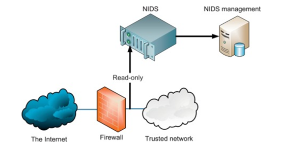

Intrusion detection refers to the detection of malicious activity in a computer-related system. These malicious activities or intrusions are interesting from a computer security perspective.
Typically, an Intrusion Detection System (IDS) monitors network traffic for suspicious activity and issues alert when such activity is discovered. It is a software application that scans a network or a system for the harmful activity or policy breaching. Any malicious venture or violation is normally reported either to an administrator or collected centrally using a security information and event management (SIEM) system. A SIEM system integrates outputs from multiple sources and uses alarm filtering techniques to differentiate malicious activity from false alarms.

An Intrusion Detection System (IDS) is a network security technology originally built for detecting vulnerability exploits against a target application or computer. Intrusion Prevention Systems (IPS) extended IDS solutions by adding the ability to block threats in addition to detecting them and has become the dominant deployment option for IDS/IPS technologies.
IDS and firewall both are related to the network security but an IDS differs from a firewall as a firewall looks outwardly for intrusions in order to stop them from happening. Firewalls restrict access between networks to prevent intrusion and if an attack is from inside the network it don’t signal. An IDS describes a suspected intrusion once it has happened and then signals an alarm.
An intrusion is different from the normal behavior of the system, and hence anomaly detection techniques are applicable in intrusion detection domain.